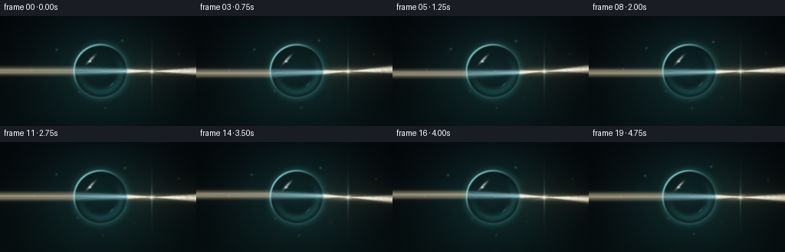
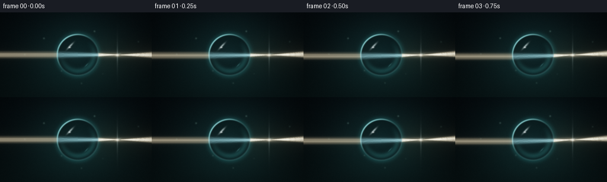
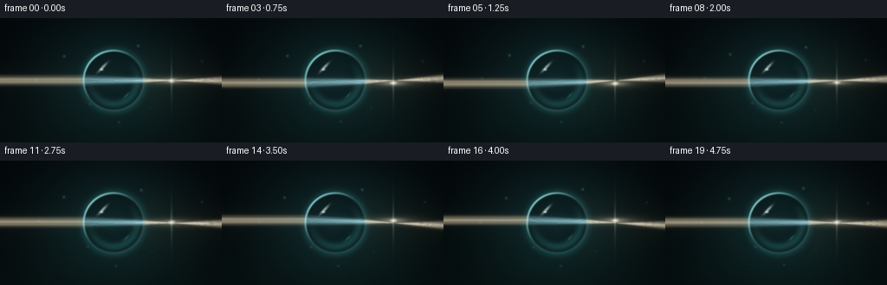
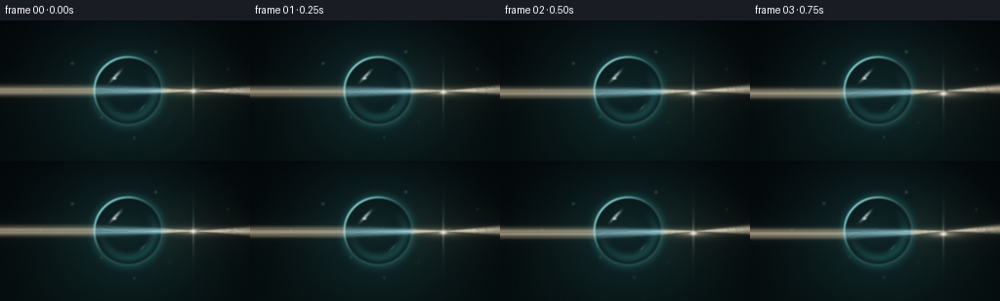

CODING AGENTS AS PIXEL WORLD MODELS
traex/DeepSeek-V4.1-Flash · phygen_088
点击播放 · 原生 RGB 像素
逐轮保存的候选
回放视频、检查图与代码变化。
每份候选均可单独播放。实际图片检查记录在下方工具轨迹中。
候选 01播放与检查图
点击播放 · 原生 RGB 像素


展开代码变化
--- 上一保存版本
+++ 本次保存版本
@@ -0,0 +1,367 @@
+"""Procedural RGB render of a light beam refracted by a suspended water droplet."""
+
+from pathlib import Path
+
+import cv2
+import numpy as np
+
+import artifact_io
+
+
+CASE_DIR = Path(__file__).resolve().parent
+OUT_W, OUT_H = 256, 144
+N_FRAMES = 20
+FPS = 4
+SS = 3
+W, H = OUT_W * SS, OUT_H * SS
+
+
+def blur(image, sigma):
+ return cv2.GaussianBlur(image, (0, 0), sigmaX=sigma, sigmaY=sigma)
+
+
+def smoothstep(edge0, edge1, value):
+ x = np.clip((value - edge0) / (edge1 - edge0), 0.0, 1.0)
+ return x * x * (3.0 - 2.0 * x)
+
+
+def refract(direction, outward_normal, eta):
+ """Refract a unit direction through a normal pointing against the ray."""
+ cos_i = -np.dot(outward_normal, direction)
+ k = 1.0 - eta * eta * (1.0 - cos_i * cos_i)
+ if k < 0.0:
+ return None
+ return eta * direction + (eta * cos_i - np.sqrt(k)) * outward_normal
+
+
+def trace_horizontal_ray(cx, cy, radius, y, refractive_index):
+ """Trace a left-to-right horizontal ray through a circular water lens."""
+ b = y - cy
+ if abs(b) >= radius - 0.25:
+ return None
+ entry = np.array([cx - np.sqrt(radius * radius - b * b), y], dtype=np.float64)
+ direction = np.array([1.0, 0.0], dtype=np.float64)
+ entry_normal = (entry - np.array([cx, cy])) / radius
+ inside = refract(direction, entry_normal, 1.0 / refractive_index)
+ if inside is None:
+ return None
+ inside /= np.linalg.norm(inside)
+
+ relative = entry - np.array([cx, cy])
+ travel = -2.0 * np.dot(relative, inside)
+ exit_point = entry + travel * inside
+ exit_normal = (exit_point - np.array([cx, cy])) / radius
+ outside = refract(inside, -exit_normal, refractive_index)
+ if outside is None:
+ return None
+ outside /= np.linalg.norm(outside)
+ return entry, exit_point, outside
+
+
+def background(cx, cy, radius, phase):
+ """Build a quiet, deep-teal macro backdrop with softly defocused highlights."""
+ yy, xx = np.mgrid[0:H, 0:W].astype(np.float32)
+ xn, yn = xx / W, yy / H
+
+ top = np.array([0.008, 0.020, 0.027], dtype=np.float32)
+ bottom = np.array([0.015, 0.041, 0.043], dtype=np.float32)
+ vertical = np.clip(yn + 0.18 * np.sin(np.pi * xn), 0.0, 1.0)
+ image = top + (bottom - top) * vertical[..., None]
+
+ halo = np.exp(-(((xx - cx) / (radius * 2.9)) ** 2
+ + ((yy - cy) / (radius * 2.4)) ** 2) * 1.7)
+ image += halo[..., None] * np.array([0.020, 0.063, 0.062], dtype=np.float32)
+
+ warm_pool = np.exp(-(((xx - (cx + radius * 1.75)) / (radius * 1.8)) ** 2
+ + ((yy - cy) / (radius * 0.95)) ** 2))
+ image += warm_pool[..., None] * np.array([0.021, 0.017, 0.008], dtype=np.float32)
+
+ # Out-of-focus particles suggest depth without introducing a second subject.
+ bokeh = np.zeros((H, W), dtype=np.float32)
+ motes = [
+ (0.10, 0.17, 0.055, 0.25), (0.20, 0.83, 0.075, 0.18),
+ (0.83, 0.20, 0.085, 0.17), (0.91, 0.72, 0.060, 0.22),
+ (0.69, 0.09, 0.040, 0.16), (0.06, 0.58, 0.035, 0.16),
+ (0.38, 0.91, 0.045, 0.13), (0.74, 0.92, 0.032, 0.14),
+ ]
+ for index, (mx, my, mr, strength) in enumerate(motes):
+ drift = 2.2 * SS * np.sin(phase + index * 1.71)
+ drift_y = 1.2 * SS * np.cos(phase * 0.7 + index)
+ px = int(mx * W + drift)
+ py = int(my * H + drift_y)
+ pr = max(2, int(mr * radius))
+ layer = np.zeros_like(bokeh)
+ cv2.circle(layer, (px, py), pr, strength, -1, cv2.LINE_AA)
+ layer = blur(layer, 8.0 * SS)
+ bokeh += layer
+ image += bokeh[..., None] * np.array([0.055, 0.135, 0.135], dtype=np.float32)
+
+ # Fine airborne specks catch a little of the key light.
+ dust = np.zeros((H, W), dtype=np.float32)
+ specks = [
+ (0.29, 0.30, 1.1), (0.40, 0.69, 0.9), (0.63, 0.23, 1.0),
+ (0.79, 0.49, 0.8), (0.91, 0.34, 0.7), (0.17, 0.49, 0.7),
+ (0.53, 0.84, 0.8), (0.68, 0.73, 0.6),
+ ]
+ for index, (sx, sy, size) in enumerate(specks):
+ px = int(sx * W + 1.8 * SS * np.sin(phase + index * 2.3))
+ py = int(sy * H + 1.1 * SS * np.cos(phase + index * 1.4))
+ cv2.circle(dust, (px, py), max(1, int(size * SS)), 0.65, -1, cv2.LINE_AA)
+ image += blur(dust, 0.9 * SS)[..., None] * np.array(
+ [0.32, 0.43, 0.38], dtype=np.float32
+ )
+
+ edge = np.clip((xx - W * 0.5) / (W * 0.5), -1.0, 1.0)
+ vignette = 1.0 - 0.26 * edge ** 2 - 0.16 * (yn - 0.46) ** 2
+ image *= vignette[..., None]
+ return np.clip(image, 0.0, 1.0)
+
+
+def draw_beam(cx, cy, radius, beam_y, beam_half_width, phase):
+ """Rasterize a collimated bundle, retaining separate incident and exit fans."""
+ incident = np.zeros((H, W), dtype=np.float32)
+ interior = np.zeros((H, W), dtype=np.float32)
+ outgoing = np.zeros((H, W), dtype=np.float32)
+ ray_offsets = np.arange(
+ -beam_half_width, beam_half_width + 0.01, 0.72 * SS
+ )
+ for offset in ray_offsets:
+ profile = np.exp(-0.5 * (offset / (0.43 * beam_half_width)) ** 2)
+ ray = trace_horizontal_ray(cx, cy, radius, beam_y + offset, 1.333)
+ if ray is None:
+ continue
+ entry, exit_point, direction = ray
+ cv2.line(
+ incident,
+ (0, int(round(entry[1]))),
+ (int(round(entry[0])), int(round(entry[1]))),
+ float(profile), 1, cv2.LINE_AA,
+ )
+ cv2.line(
+ interior,
+ tuple(np.rint(entry).astype(int)),
+ tuple(np.rint(exit_point).astype(int)),
+ float(profile), 1, cv2.LINE_AA,
+ )
+ end_x = W + 8 * SS
+ travel = (end_x - exit_point[0]) / max(direction[0], 1e-5)
+ end = exit_point + direction * travel
+ cv2.line(
+ outgoing,
+ tuple(np.rint(exit_point).astype(int)),
+ (int(round(end[0])), int(round(end[1]))),
+ float(profile), 1, cv2.LINE_AA,
+ )
+
+ def layers(mask, intensity):
+ core = blur(mask, 0.48 * SS)
+ near = blur(mask, 2.4 * SS)
+ far = blur(mask, 11.0 * SS)
+ very_far = blur(mask, 27.0 * SS)
+ return (core * 1.0 + near * 0.30 + far * 0.085
+ + very_far * 0.022) * intensity
+
+ return (
+ layers(incident, 0.93),
+ layers(interior, 0.82),
+ layers(outgoing, 0.96),
+ )
+
+
+def droplet_surface(image, cx, cy, radius, phase, beam_y):
+ yy, xx = np.mgrid[0:H, 0:W].astype(np.float32)
+ dx = xx - cx
+ dy = yy - cy
+ radial = np.sqrt(dx * dx + dy * dy)
+ nx = dx / np.maximum(radial, 1e-5)
+ ny = dy / np.maximum(radial, 1e-5)
+ rn = np.clip(radial / radius, 0.0, 1.0)
+ angle = np.arctan2(dy, dx)
+
+ inside_alpha = smoothstep(radius + 0.7 * SS, radius - 0.7 * SS, radial)
+ inside_alpha = np.clip(inside_alpha, 0.0, 1.0)
+
+ # The flipped, slightly compressed sampling approximates the droplet's lensing.
+ lens_scale = 0.78 + 0.24 * rn
+ swirl = (0.025 * radius * rn * rn
+ * np.sin(3.0 * angle + 0.75 * phase + 0.6))
+ sample_x = cx - dx * lens_scale + np.cos(angle + np.pi / 2) * swirl
+ sample_y = cy - dy * lens_scale + np.sin(angle + np.pi / 2) * swirl
+ warped = cv2.remap(
+ image.astype(np.float32), sample_x.astype(np.float32),
+ sample_y.astype(np.float32), cv2.INTER_LINEAR,
+ borderMode=cv2.BORDER_REFLECT,
+ )
+
+ body = warped * 0.47
+ body += np.array([0.004, 0.020, 0.024], dtype=np.float32)
+ body += (np.exp(-((rn / 0.56) ** 2)) * 0.017)[..., None] * np.array(
+ [0.25, 0.90, 0.93], dtype=np.float32
+ )
+
+ # A thin dark meniscus at the edge gives the transparent volume a real boundary.
+ edge_shade = np.exp(-(((radius - radial) / (1.2 * SS)) ** 2))
+ body *= (1.0 - 0.27 * edge_shade)[..., None]
+
+ lower_bounce = np.exp(-(((radial - radius * 0.78) / (0.13 * radius)) ** 2))
+ lower_bounce *= np.clip(0.35 + 0.65 * ny + 0.28 * nx, 0.0, 1.0)
+ body += (lower_bounce * 0.12)[..., None] * np.array(
+ [0.30, 0.92, 0.88], dtype=np.float32
+ )
+
+ image = image * (1.0 - inside_alpha[..., None]) + body * inside_alpha[..., None]
+
+ # Fresnel rim, strongest where the key light grazes the left shoulder.
+ rim = np.exp(-(((radial - radius * 0.982) / (1.05 * SS)) ** 2))
+ light_dot = np.clip(-0.70 * nx - 0.72 * ny, 0.0, 1.0)
+ rim_strength = rim * (0.13 + 0.77 * light_dot ** 1.7)
+ image += rim_strength[..., None] * np.array(
+ [0.52, 0.96, 0.94], dtype=np.float32
+ )
+
+ # Soft external halo separates the water from the dark background.
+ outside = np.clip(radial - radius, 0.0, None)
+ halo = np.exp(-((outside / (4.6 * SS)) ** 2))
+ halo *= smoothstep(radius - 0.5, radius + 0.5, radial)
+ image += (halo * 0.10)[..., None] * np.array(
+ [0.18, 0.70, 0.70], dtype=np.float32
+ )
+
+ # Elongated window reflection on the upper-left surface.
+ hx = dx + 0.36 * radius
+ hy = dy + 0.43 * radius
+ tangent = np.array([0.69, -0.72], dtype=np.float32)
+ normal = np.array([0.72, 0.69], dtype=np.float32)
+ along = (hx * tangent[0] + hy * tangent[1]) / (0.23 * radius)
+ across = (hx * normal[0] + hy * normal[1]) / (0.050 * radius)
+ highlight = np.exp(-1.75 * (along * along + across * across))
+ highlight *= inside_alpha
+ image += (highlight * 0.62)[..., None] * np.array(
+ [0.90, 1.0, 0.97], dtype=np.float32
+ )
+
+ hot_x = dx + 0.39 * radius
+ hot_y = dy + 0.36 * radius
+ hotspot = np.exp(-((hot_x / (0.045 * radius)) ** 2
+ + (hot_y / (0.030 * radius)) ** 2))
+ image += (hotspot * 0.72 * inside_alpha)[..., None] * np.array(
+ [1.0, 1.0, 0.96], dtype=np.float32
+ )
+
+ # A smaller bounce light on the opposite edge.
+ bx = dx - 0.42 * radius
+ by = dy - 0.49 * radius
+ bounce_along = (bx * tangent[0] + by * tangent[1]) / (0.15 * radius)
+ bounce_across = (bx * normal[0] + by * normal[1]) / (0.032 * radius)
+ bounce = np.exp(-1.9 * (bounce_along ** 2 + bounce_across ** 2))
+ image += (bounce * 0.16 * inside_alpha)[..., None] * np.array(
+ [0.45, 0.93, 0.92], dtype=np.float32
+ )
+
+ return image, inside_alpha
+
+
+def add_beam_and_caustic(image, beams, cx, cy, radius, phase, beam_y):
+ incident, interior, outgoing = beams
+ image += incident[..., None] * np.array(
+ [1.00, 0.86, 0.64], dtype=np.float32
+ )
+ image += interior[..., None] * np.array(
+ [0.62, 0.96, 1.00], dtype=np.float32
+ )
+ image += outgoing[..., None] * np.array(
+ [1.00, 0.88, 0.68], dtype=np.float32
+ )
+
+ yy, xx = np.mgrid[0:H, 0:W].astype(np.float32)
+ focus_x = cx + 1.90 * radius
+ focus_y = cy + 0.01 * radius
+ dx = xx - focus_x
+ dy = yy - focus_y
+
+ focus = np.exp(-((dx / (3.0 * SS)) ** 2 + (dy / (1.7 * SS)) ** 2))
+ focus += 0.30 * np.exp(-((dx / (13.0 * SS)) ** 2 + (dy / (2.8 * SS)) ** 2))
+ focus += 0.11 * np.exp(-((dx / (31.0 * SS)) ** 2 + (dy / (5.8 * SS)) ** 2))
+ focus *= 0.93 + 0.07 * np.sin(phase * 1.5)
+ image += focus[..., None] * np.array(
+ [1.00, 0.88, 0.68], dtype=np.float32
+ )
+
+ # Small vertical diffraction flare and a restrained cyan fringe.
+ flare = np.exp(-(dx / (1.1 * SS)) ** 2) * np.exp(
+ -np.abs(dy) / (12.0 * SS)
+ )
+ image += (flare * 0.23)[..., None] * np.array(
+ [0.85, 0.97, 0.94], dtype=np.float32
+ )
+ fringe = np.exp(-(((dx - 2.6 * SS) / (1.4 * SS)) ** 2
+ + ((dy + 1.8 * SS) / (1.1 * SS)) ** 2))
+ image += (fringe * 0.14)[..., None] * np.array(
+ [0.28, 0.80, 1.00], dtype=np.float32
+ )
+
+ # Volumetric forward scatter keeps the beam from looking like a drawn line.
+ ambient = blur(incident + outgoing, 10.0 * SS)
+ image += ambient[..., None] * np.array(
+ [0.030, 0.024, 0.012], dtype=np.float32
+ )
+ return image
+
+
+def render_frame(index):
+ phase = 2.0 * np.pi * index / N_FRAMES
+ cx = 131.0 * SS
+ cy = 72.0 * SS
+ radius = 35.2 * SS
+ beam_center = cy + 3.2 * SS * np.sin(phase)
+ beam_half_width = 6.6 * SS * (1.0 + 0.035 * np.sin(2.0 * phase + 0.4))
+
+ image = background(cx, cy, radius, phase)
+ beams = draw_beam(cx, cy, radius, beam_center, beam_half_width, phase)
+ image, inside = droplet_surface(image, cx, cy, radius, phase, beam_center)
+
+ # Light transported inside the water is clipped to the droplet silhouette.
+ image += beams[1][..., None] * inside[..., None] * np.array(
+ [0.62, 0.96, 1.00], dtype=np.float32
+ )
+ image += beams[0][..., None] * np.array(
+ [1.00, 0.86, 0.64], dtype=np.float32
+ )
+ image += beams[2][..., None] * np.array(
+ [1.00, 0.88, 0.68], dtype=np.float32
+ )
+ image = add_beam_and_caustic(
+ image, (np.zeros_like(beams[0]), np.zeros_like(beams[1]), beams[2]),
+ cx, cy, radius, phase, beam_center,
+ )
+
+ # Gentle highlight shimmer reads as motion on the water without destabilizing it.
+ yy, xx = np.mgrid[0:H, 0:W].astype(np.float32)
+ radial = np.sqrt((xx - cx) ** 2 + (yy - cy) ** 2)
+ rim = np.exp(-(((radial - radius) / (1.1 * SS)) ** 2))
+ image += (rim * 0.022 * (0.5 + 0.5 * np.sin(phase + 0.8)))[..., None] * np.array(
+ [0.25, 0.75, 0.73], dtype=np.float32
+ )
+
+ # Filmic shoulder and a slightly cool, deep-shadow grade.
+ image = np.maximum(image, 0.0)
+ image = 1.0 - np.exp(-image * 1.48)
+ image = np.power(image, 0.94)
+ image[..., 0] *= 0.985
+ image[..., 2] *= 1.018
+
+ image = cv2.resize(image, (OUT_W, OUT_H), interpolation=cv2.INTER_AREA)
+ rng = np.random.default_rng(1307 + index)
+ grain = rng.normal(0.0, 0.0018, (OUT_H, OUT_W, 1)).astype(np.float32)
+ image = np.clip(image + grain, 0.0, 1.0)
+ return np.rint(image * 255.0).astype(np.uint8)
+
+
+def main():
+ frames = np.stack([render_frame(index) for index in range(N_FRAMES)])
+ artifact_io.save(frames, CASE_DIR)
+ print(f"saved {N_FRAMES} frames at {OUT_W}x{OUT_H}, {FPS} fps")
+
+
+if __name__ == "__main__":
+ main()
候选 02播放与检查图
点击播放 · 原生 RGB 像素


展开代码变化
--- 上一保存版本
+++ 本次保存版本
@@ -275,7 +275,7 @@
yy, xx = np.mgrid[0:H, 0:W].astype(np.float32)
focus_x = cx + 1.90 * radius
- focus_y = cy + 0.01 * radius
+ focus_y = beam_y + 0.01 * radius
dx = xx - focus_x
dy = yy - focus_y
@@ -331,7 +331,8 @@
[1.00, 0.88, 0.68], dtype=np.float32
)
image = add_beam_and_caustic(
- image, (np.zeros_like(beams[0]), np.zeros_like(beams[1]), beams[2]),
+ image, (np.zeros_like(beams[0]), np.zeros_like(beams[1]),
+ np.zeros_like(beams[2])),
cx, cy, radius, phase, beam_center,
)
可观测工具轨迹
实际执行的命令与返回图片。
命令 1exit 0
/bin/bash -c "pwd && rg --files -g 'prompt.txt' -g 'GENERATION_RULES.md' -g 'task_spec.json' -g '"'!**/.git/**'"'"
命令 2exit 0
/bin/bash -c "git status --short && find . -maxdepth 2 -type f -printf '%p\\n' | sort | head -200"
命令 3exit 0
/bin/bash -c 'cat prompt.txt'
命令 4exit 0
/bin/bash -c 'cat GENERATION_RULES.md'
命令 5exit 0
/bin/bash -c 'cat task_spec.json'
命令 6exit 0
/bin/bash -c "sed -n '1,240p' artifact_io.py"
命令 7exit 0
/bin/bash -c "python - <<'PY'
import numpy as np
R=1.0; n=1.333
for b in [-.8,-.6,-.4,-.2,0,.2,.4,.6,.8]:
x=-np.sqrt(1-b*b); p=np.array([x,b]); N=p.copy(); d=np.array([1.,0.])
eta=1/n; ci=-np.dot(N,d)
t=eta*d+(eta*ci-np.sqrt(1-eta*eta*(1-ci*ci)))*N
s=-2*np.dot(p,t)
q=p+s*t; N2=q.copy(); ci2=np.dot(N2,t); eta2=n
out=eta2*t+(eta2*ci2-np.sqrt(1-eta2*eta2*(1-ci2*ci2)))*(-N2)
# intersection with y=0
if abs(out[1])>1e-8:
sx=-q[0]/out[0]
yy=q[1]+sx*out[1]
print(b, 'exit',q.round(3),'dir',out.round(3),'x at y0',sx,'y',yy)
else: print(b,'exit',q.round(3),'dir',out.round(3))
PY"命令 8exit 0
/bin/bash -c "python - <<'PY' import importlib.util for m in ['numpy','PIL','scipy','cv2','imageio','ffmpeg']: print(m, bool(importlib.util.find_spec(m))) PY"
命令 9exit 0
/bin/bash -c "python - <<'PY'
import cv2
im=cv2.imread('frames/00.png') if __import__('os').path.exists('frames/00.png') else None
print(im.shape if im is not None else 'none')
PY"命令 10exit 0
/bin/bash -c 'python generate.py'
命令 11exit 0
/bin/bash -c "python - <<'PY'
from PIL import Image
import numpy as np
im=Image.open('inspection.png')
print('inspection', im.size)
frames=[]
for i in [0,5,10,15,19]:
a=np.asarray(Image.open(f'frames/{i:02d}.png')).astype(float)
frames.append(a)
print(i, 'mean', a.mean(axis=(0,1)).round(1), 'p99', np.percentile(a,99).round(1), 'max', a.max())
PY"命令 12exit 0
/bin/bash -c "python - <<'PY'
from PIL import Image
import numpy as np
chars=' .,:;irsXA253hMHGS#9B&@'
for f in [0,10,19]:
a=np.asarray(Image.open(f'frames/{f:02d}.png').convert('L').resize((96,40)))
# local tone map for dark image
a=np.clip((a-3)*2.2,0,255).astype(int)
print('\\nFRAME',f)
for row in a:
print(''.join(chars[min(len(chars)-1, v*(len(chars)-1)//256)] for v in row))
PY"命令 13exit 0
/bin/bash -c 'command -v chafa || command -v viu || command -v jp2 || command -v img2txt || true'
命令 14exit 0
/bin/bash -c "python - <<'PY'
from PIL import Image
import numpy as np
im=np.asarray(Image.open('frames/00.png')).astype(float)
# print crop around droplet as RGB color blocks? Generate a 2x upscale color quantized ANSI image.
chars=' .:-=+*#%@'
for y in range(20,124,2):
row=''
for x in range(65,198,2):
r,g,b=im[y:y+2,x:x+2].mean(axis=(0,1))
lum=.2126*r+.7152*g+.0722*b
ch=chars[min(9,int(lum/256*10))]
# ANSI true color foreground
row += f'\\x1b[38;2;{int(r)};{int(g)};{int(b)}m{ch}'
row+='\\x1b[0m'
print(row)
PY"命令 15exit 0
/bin/bash -c "python - <<'PY'
from PIL import Image
import numpy as np
for i in [0,10,19]:
im=np.asarray(Image.open(f'frames/{i:02d}.png')).astype(float)
lum=im.mean(2)
print('\\n',i)
for y in [20,35,50,65,70,72,75,80,90,105,120]:
row=lum[y]
print('y',y,'max',row.max(),'xmax',row.argmax(),'means',row[:96].mean().round(1),row[96:167].mean().round(1),row[167:].mean().round(1))
# top peaks
idx=np.dstack(np.unravel_index(np.argsort(lum.ravel())[-8:],lum.shape))[0]
print('peaks',[(int(x),int(y),round(float(lum[y,x]),1)) for y,x in idx[::-1]])
PY"命令 16exit 0
/bin/bash -c "python - <<'PY'
from PIL import Image, ImageDraw
import numpy as np, cv2
# Create high contrast edge map enlarged, useful for geometry QA without altering submitted frames.
im=np.asarray(Image.open('frames/00.png')).astype(np.float32)
g=cv2.cvtColor(im.astype(np.uint8),cv2.COLOR_RGB2GRAY).astype(np.float32)
# structure tensor-ish edge magnitude
e=cv2.Laplacian(g,cv2.CV_32F,ksize=3)
e=np.clip(np.abs(e)*4,0,255).astype(np.uint8)
out=Image.fromarray(e).resize((1024,576),Image.Resampling.NEAREST)
out.save('.tmp/edges.png')
print('edge percentiles',np.percentile(e,[50,90,95,99,99.9]))
PY"命令 17exit 0
/bin/bash -c "python - <<'PY'
from PIL import Image
import numpy as np
chars=' .:-=+*#%@'
for i in [0,5,10,15,19]:
a=np.asarray(Image.open(f'frames/{i:02d}.png').convert('L'))
# show changes from frame 0
d=np.abs(a.astype(int)-np.asarray(Image.open('frames/00.png').convert('L')).astype(int))
print(i, 'diff mean/max/p99/count>10', d.mean().round(3), d.max(), np.percentile(d,99).round(1), (d>10).sum())
# motion vector: centroid of diff frame 19 from 0 by region
PY"命令 18exit 0
/bin/bash -c "python - <<'PY'
from PIL import Image
import numpy as np, cv2
for i in [0,10,19]:
im=np.asarray(Image.open(f'frames/{i:02d}.png'))
lab=cv2.cvtColor(im,cv2.COLOR_RGB2LAB)
print(i,'L pct',np.percentile(lab[:,:,0],[1,10,50,90,99]).round(1),'sat pct',np.percentile(cv2.cvtColor(im,cv2.COLOR_RGB2HSV)[:,:,1],[50,90,99]).round(1))
# Determine saturation and hue
PY"命令 19exit 0
/bin/bash -c "python - <<'PY'
from PIL import Image
import numpy as np
im=np.asarray(Image.open('inspection.png'))
# Print inspection as a coarse block map with x/y ruler omitted.
g=np.asarray(Image.fromarray(im).convert('L')).astype(float)
# inspection includes labels/borders, so save standalone 8-frame contact sheet instead.
ims=[Image.open(f'frames/{i:02d}.png') for i in range(0,20,2)]
sheet=Image.new('RGB',(256*5,144*2),(20,20,20))
for j,a in enumerate(ims): sheet.paste(a,((j%5)*256,(j//5)*144))
sheet.resize((1280*2,288*2),Image.Resampling.NEAREST).save('.tmp/contact.png')
print(sheet.size)
PY"命令 20exit 0
/bin/bash -c 'python generate.py'
命令 21exit 0
/bin/bash -c "python - <<'PY'
from pathlib import Path
import numpy as np, cv2
from PIL import Image
frames=np.stack([np.asarray(Image.open(f'frames/{i:02d}.png')) for i in range(20)])
print('shape/dtype',frames.shape,frames.dtype)
for i in [0,5,10,15,19]:
f=frames[i]; g=cv2.cvtColor(f,cv2.COLOR_RGB2GRAY)
print(i,'mean',f.mean(axis=(0,1)).round(2),'p99',np.percentile(g,99).round(1),'bright>180',int((g>180).sum()))
for i in range(1,20):
d=np.abs(frames[i].astype(int)-frames[i-1].astype(int))
print(f'{i:02d}',round(float(d.mean()),2),int((d.mean(2)>8).sum()))
print('artifacts',[(p.name,p.stat().st_size) for p in sorted(Path('.').iterdir()) if p.is_file()])
PY"命令 22exit 1
/bin/bash -c "python - <<'PY'
import json, base64
from pathlib import Path
import numpy as np
from PIL import Image
spec=json.loads(Path('task_spec.json').read_text())
html=Path('index.html').read_text()
assert spec == {'task_type':'t2v','width':256,'height':144,'frames':20,'fps':4.0,'audio':None}
assert '__DATA__' not in html and '__ID__' not in html
assert len(list(Path('frames').glob('*.png'))) == 20
with np.load('pixels.npz') as z:
p=z['pixels']
assert p.shape == (144,256,20) and p.dtype == np.uint32
first=np.stack([(p>>16)&255,(p>>8)&255,p&255],axis=-1).astype(np.uint8)
assert np.array_equal(first, np.asarray(Image.open('frames/00.png')))
print('contract artifacts valid; html bytes',len(html.encode()))
PY"命令 23exit 0
/bin/bash -c 'git status --short -- . && du -h generate.py pixels.npz index.html inspection.png'
命令 24exit 1
/bin/bash -c "python - <<'PY'
import json
from pathlib import Path
import numpy as np
from PIL import Image
spec=json.loads(Path('task_spec.json').read_text())
print('spec',spec)
html=Path('index.html').read_text()
print('markers', '__DATA__' in html, '__ID__' in html)
print('frames',len(list(Path('frames').glob('*.png'))))
with np.load('pixels.npz') as z:
p=z['pixels']
print('pixels',p.shape,p.dtype)
first=np.stack([(p>>16)&255,(p>>8)&255,p&255],axis=-1).astype(np.uint8)
actual=np.asarray(Image.open('frames/00.png'))
print('first shape',first.shape,actual.shape,'equal',np.array_equal(first,actual))
d=np.abs(first.astype(int)-actual.astype(int))
print('diff',d.max(),(d>0).sum())
PY"命令 25exit 0
/bin/bash -c "python - <<'PY'
import json
from pathlib import Path
import numpy as np
from PIL import Image
spec=json.loads(Path('task_spec.json').read_text())
assert spec['width']==256 and spec['height']==144 and spec['frames']==20 and spec['fps']==4.0
html=Path('index.html').read_text()
assert '__DATA__' not in html and '__ID__' not in html
assert len(list(Path('frames').glob('*.png'))) == 20
with np.load('pixels.npz') as z:
p=z['pixels']
assert p.shape == (144,256,20) and p.dtype == np.uint32
first=np.stack([(p[:,:,0]>>16)&255,(p[:,:,0]>>8)&255,p[:,:,0]&255],axis=-1).astype(np.uint8)
actual=np.asarray(Image.open('frames/00.png'))
assert np.array_equal(first,actual)
print('all contract checks passed')
PY"保存候选 2 份；完成命令 25 次；可验证图片返回 0 张。原始 API 响应与完整日志保留在本地。